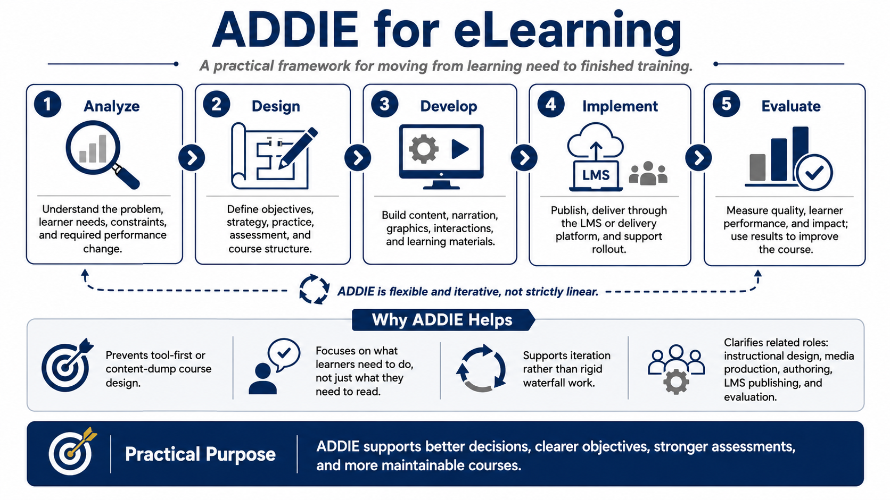

What Is the ADDIE Model?
Connecting to LMS... Progress: in progress

Narration
ADDIE is a practical instructional design framework for moving from a learning need to a finished learning experience. The name stands for Analyze, Design, Develop, Implement, and Evaluate. Those five words describe the major decisions course creators make: understand the problem, plan the experience, build the materials, deliver the course, and use evidence to improve it.
For eLearning, ADDIE is useful because it keeps the team from jumping straight into screens, tools, graphics, or narration before the instructional problem is understood. Many weak courses begin as content dumps. A policy document, slide deck, or manual is copied into a course shell, a quiz is added at the end, and the result is called training. ADDIE pushes the team to ask what learners need to do differently, not only what information they need to receive.
ADDIE should be treated as a flexible workflow, not a rigid waterfall requirement. In real projects, analysis can reveal design constraints, design can expose content gaps, development can uncover technical issues, and evaluation can send the team back to revise earlier decisions. The value of ADDIE is not paperwork. The value is disciplined thinking at the right moments.
It also helps separate related but different kinds of work. Instructional design defines objectives, strategy, practice, and assessment. Media production creates graphics, audio, video, and documents. Course authoring assembles the learning experience. LMS publishing handles delivery and tracking. Evaluation measures quality and impact. When those roles are clear, the course becomes easier to build and maintain.
The practical purpose of ADDIE is decision support. It helps teams avoid tool-first development, vague objectives, decorative interactions, and assessments that do not measure the intended outcome. A structured process creates room for creativity because the team knows what problem the course is trying to solve.